세상에는 사람마다 하나씩, 보이지 않는 ‘머니 스토리’가 있어요.
그 이야기를 함께 읽어주는 단짝, 모스토와 리토를 소개할게요!
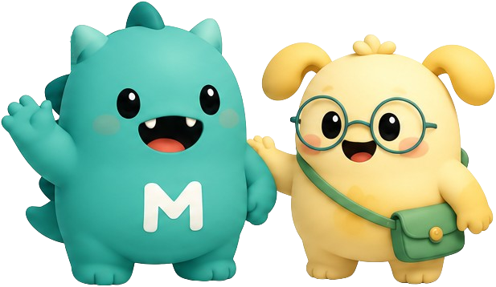
매일의 소비와 저축, 투자와 선택들이 모여 하나의 이야기가 됩니다.
하지만 대부분의 사람들은 자신의 이야기를 제대로 읽지 못합니다.
그래서 등장한 존재가 바로 스토리 몬스터예요.
사람들이 남긴 돈의 기록을 먹고 성장하는 신비한 생명체죠.
이들이 좋아하는 건 돈 자체가 아니라,
그 안에 담긴 습관 · 목표 · 성장 · 경험입니다.
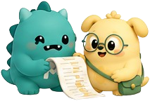
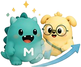
“일단 해보자!” — 돈 이야기를 먹고 자라는 호기심쟁이
긍정적인 행동파 스토리 몬스터.
숫자 뒤에 숨은 패턴을 귀신같이 찾아내, 딱딱한 데이터를 살아있는 이야기로 바꿔줘요.
모든 돈에는 이야기가 있어! 성장은 생각보다 가까이에 있어
“잠깐, 정리부터 하자.” — 기록을 사랑하는 꼼꼼쟁이
모스토의 둘도 없는 단짝.
차분하고 계획적이라 흩어진 기록도 리토 손을 거치면 착착 정리돼요. 20년 전 기록도 단번에 찾아내죠.
정리하면 답이 보여. 기록은 절대 배신하지 않아
어릴 때부터 함께 자란 단짝. 성격은 정반대인데, 그래서 더 잘 맞아요
행동파 모스토 + 정리왕 리토 = 완벽한 머니 듀오
옆으로 넘기며 두 친구의 여정을 따라가 보세요
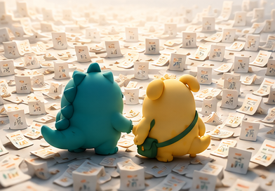
어디선가 흩어진 수많은 돈의 기록들 속에서 모스토와 리토는 새로운 모험을 시작해요.
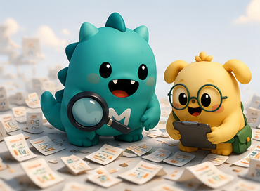
모스토는 흩어진 기록에서 의미 있는 단서를 찾고, 리토는 꼼꼼하게 모아 정리해요.
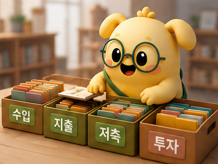
리토가 정리한 기록들은 질서가 생기고, 숨겨져 있던 패턴들이 모습을 드러내요.
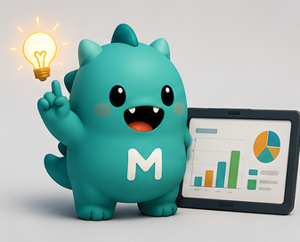
모스토는 데이터를 분석해 의미 있는 인사이트를 발견하고 이야기로 바꿔요.
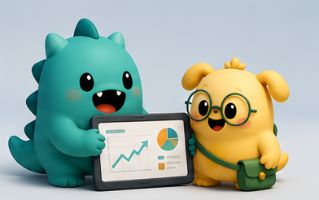
두 친구는 함께 데이터를 살펴보고, 당신의 돈 이야기를 이해해요.
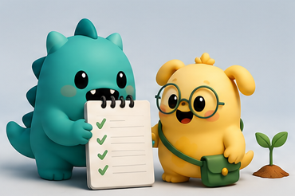
당신의 꿈과 목표를 토대로, 더 나은 미래를 위한 계획을 세워요.
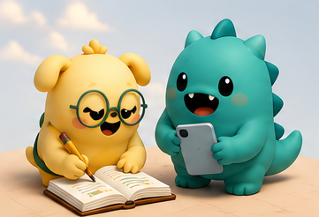
매일의 수입과 지출, 작은 메모까지 차곡차곡 기록해요.
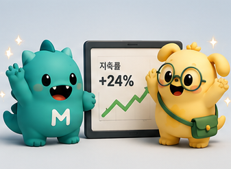
시간이 지나고, 꾸준한 기록과 분석으로 눈에 보이는 성장이 나타나요.
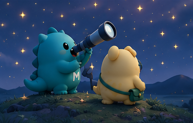
두 친구는 더 나은 선택과 기회를 찾기 위해 다양한 가능성을 탐색해요.
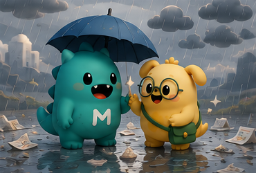
때로는 예상치 못한 어려움도 생기지만, 함께라서 더 잘 이겨낼 수 있어요.
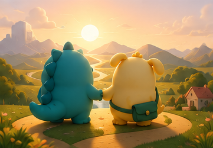
기록이 쌓이고, 경험이 쌓여 더 큰 꿈과 미래를 그릴 수 있게 돼요.
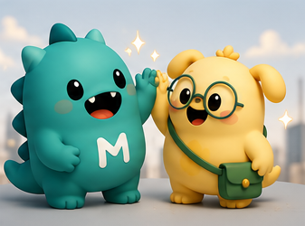
모스토와 리토는 앞으로도 함께 당신의 돈 이야기를 성장으로 바꿔갈 거예요!
모스토와 리토는 MonStory 곳곳에서 당신의 이야기를 함께 읽어줘요
“이번 달 소비 패턴을 발견했어!”
패턴·인사이트를 먼저 알려줘요“2022년 제주도 여행 경비, 여기 있어.”
흩어진 기록을 정리·분류해요“최근 저축률이 쭉 오르고 있어!”
성장의 흐름을 짚어줘요“8년 전 자동차 구매 기록도 찾을 수 있어.”
오래된 기억도 즉시 꺼내줘요MonStory가 자라면 더 많은 스토리 몬스터가 찾아올 거예요